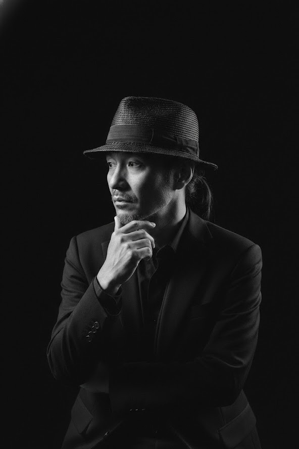

選曲・作曲・サウンドデザイン / AI × 音楽創造

テレビドラマ・映画の選曲とサウンドデザインを軸に活動する音楽家。
パッドによる音の立ち上がりと空気感の設計を武器に、
映像と音のあいだに「気配」を生み出し続けてきました。
近年は、選曲判断の思考プロセスを AI に学習させる研究に取り組み、
人間と AI の音楽的共創を探求しています。
映像の意図、心理の流れ、演出の呼吸を読み取り、 最適な音楽の方向性を即時に提案する AI アシスタント。 御園自身の選曲メソッドをもとに、音の「気配」をモデル化した実験です。
OPEN GPT関わってきた主な作品
※このほか多数の作品に参加しています。詳細な作品歴については、お問い合わせください。
再生ボタンから、音が届きます。
note の最新記事がここに更新されます。
その他の記事は note プロフィール へ。
お仕事のご相談はこちらへ